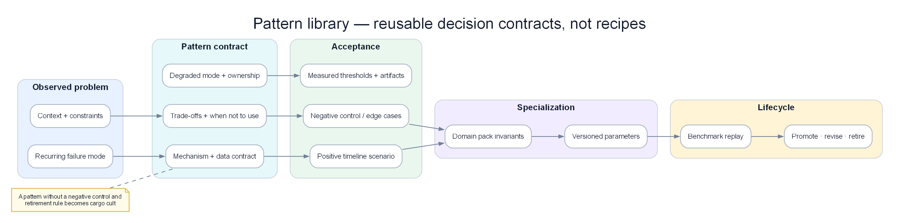

Chapter 15 — AIOps & SRE at large technology companies¶
Big Tech does not “sell” you an AIOps blueprint to copy-paste. They publish principles, public postmortems, and architecture patterns that have absorbed blows at extreme scale. This chapter extracts those principles — Google SRE, Netflix chaos, AWS operational safeguards, Meta control-plane outages, Uber ML platform — and maps them onto this handbook’s AIOps pipeline: detection → correlation → RCA → remediation → production ops. The goal is not “be like Netflix,” but to understand why they chose those trade-offs, which prerequisites must exist, and when that pattern is dangerous if your org is two steps smaller in scale and one step lower in maturity.

Poster: copy a decision contract only when its forces, negative controls, acceptance, and retirement rule travel with it.
Prerequisites¶
- 00 — Introduction to AIOps — pipeline philosophy, maturity model, when AIOps fails
- 01 — Observability — SLI/SLO, golden signals, telemetry foundations
- 09 — Anomaly Detection — anomaly signals, false positive economics
- 11 — Root Cause Analysis — topology, change correlation, evidence ranking
- 13 — Automated Remediation — safety gate, blast radius, dual-control
- 14 — Production Operations — chaos, DR, runbook, platform self-observability
Related Documents¶
- 10 — Alert Correlation — noise reduction, incident grouping
- 12 — LLM Agent — agentic investigation, human-in-the-loop
- 07 — Kafka — event backbone for the AIOps pipeline
Next Reading¶
After this chapter, continue to 16 — E-commerce & Banking to apply patterns by money/transaction domain; then 17 — Famous Incidents for postmortem drills. You can return to 14 — Production with a Big Tech checklist.
How to read this chapter (concept-first)¶
Concepts first — code second
From chapter 09 onward, prefer: problem → idea → input data → algorithm/model → output → pros/cons → when to use. Implementation lives under See the code below (click to expand). Goal: understand why it works on AIOps telemetry, not only copy-paste snippets.
| Step | Question |
|---|---|
| 1. Problem | What pain does this solve (noise, cascade, MTTR…)? |
| 2. Idea | 2–3 sentence intuition, no formulas |
| 3. Data in | Which metrics/logs/traces/events, windows, features? |
| 4. Algorithm | Computation steps / model flow |
| 5. Output | Event schema, score, rank, action proposal? |
| 6. Trade-offs | Pros / cons / cost / explainability |
| 7. When | When to use — and when not to |
1. Why learn from Big Tech (and why NOT to copy blindly)¶
1.1 Scaling laws are not linear¶
Big Tech operates in a regime where incident cost, toil cost, and coordination cost all grow super-linearly relative to mid/small orgs:
| Factor | Startup ~20 eng | Scale-up ~200 eng | Big Tech ~10k+ eng |
|---|---|---|---|
| Blast radius of one bad config | 1–3 services | 1 domain / a few teams | backbone, DNS, global edge |
| On-call load | 1–2 people “know everything” | team rotation + specialists | multi-layer IC, follow-the-sun |
| Telemetry volume | GB/day | TB/day | PB-scale, multi-region |
| Coordination cost | Slack DM | ticket + RFC | org chart + review boards |
| Value of 1 minute downtime | usually measurable | material | headline risk + large $ |
Important AIOps consequence: Big Tech tools and processes are optimized for their equilibrium point, not yours. They accept platform complexity (feature store, multi-stage correlation, global topology graph) because that complexity’s ROI is positive at their scale. At 50 eng, the same complexity is often negative ROI — not because the idea is wrong, but because platform fixed cost has not been amortized.
KEY IDEA
Learning from Big Tech = learning objective functions and constraints, not specific installs. “Netflix has Chaos Monkey” is an implementation. The principle is: if you do not proactively inject failure under safe conditions, production will inject failure under unsafe ones. Map principle → your org’s constraints → adapt.
1.2 Org structure decides architecture more than a “best practice deck”¶
Big Tech often has:
- SRE / Production Engineering as a distinct career track, not an “ops side job”.
- Error budget negotiation between product and reliability as governance, not just a dashboard.
- Platform teams that productize observability/ML/remediation for hundreds of service teams.
- Formal incident command (IC, communications, ops, scribe) — see Google IMAG in section 2.
In a small org, the same roles collapse into 2–3 people. The pattern “separate platform team + self-service portal” can become a bottleneck if you clone the org chart before you have enough service consumers.
flowchart LR
subgraph BigTech["Big Tech reality"]
P[Product teams × N]
PL[Platform / SRE platform]
INC[Incident command layer]
P -->|consume| PL
P --> INC
PL --> INC
end
subgraph SmallOrg["50-eng fintech reality"]
T[Feature teams × few]
H[2-4 hybrid SRE/platform]
T --> H
end
BigTech -.->|copy org chart blindly| FAIL[Coordination tax > value]
SmallOrg -->|extract principles| OK[Shared runbooks + thin platform]1.3 Anti-pattern: “Netflix does X so we do X”¶
This is the most common failure mode when reading public case studies:
- Cargo cult tooling: install Chaos Monkey before stable SLIs and safe rollback exist.
- Cargo cult process: formal blameless postmortems with 20-page templates for an 8-person team — culture is not ready; ceremony becomes theatre.
- Cargo cult ML: train Isolation Forest / LSTM because “Uber/Google use ML,” while 70% of incidents are change-driven and there is no trusted change feed yet.
- Cargo cult autonomy: “full closed-loop” auto-remediation without dual-control, audit trail, and a blast radius model — see 13 — Remediation.
Blind copying is more expensive than doing nothing
Skipping chaos engineering means you do not know your edge cases. Doing chaos engineering on peak traffic without a kill switch and deep enough observability means you create a deliberate SEV-1. Big Tech already paid tuition with org size and mature tooling; you have not.
1.4 Three-step learning framework: Extract → Map → Adapt¶
Every pattern in this chapter should go through the following pipeline before becoming a Jira ticket:
| Step | Question | Output |
|---|---|---|
| Extract principle | Which metric did they optimize? Which failure class did they avoid? | 1–2 sentence principle |
| Map constraint | What data/people/blast radius/regulators differ for us? | Constraint list |
| Adapt | What is the 10%, 50%, 100% version of the principle? | Decision + non-goals |
Quick example — Google error budget:
- Principle: reliability is a finite resource; spend deliberately between feature velocity and stability.
- Startup constraint: weak SLIs; product “always wants to ship”; no formal negotiation.
- Adapt 10%: pick 3 most important SLIs, report weekly burn rate; block auto-deploy when burn is critical (no committee needed).
- Adapt 100% (later): error budget policy + freeze mechanics + mandatory postmortem on exhaust.
Quick check before “importing”
If you cannot answer three questions: (1) what is the principle, (2) where do constraints differ from Big Tech, (3) what does the 10% version look like — you are cargo-culting. Stop.
1.5 Public knowledge only — how to read postmortems correctly¶
This chapter relies only on public materials: Google SRE books, Principles of Chaos, AWS post-event summaries, Meta engineering/outage communications, Uber engineering blogs on Michelangelo, etc. No internal “I heard that” numbers.
When reading a public postmortem, separate:
| Layer | Example | Learning value |
|---|---|---|
| Facts | “tool command removed more capacity than intended” | failure class |
| Mechanism | automation race, dependency loop | design invariant |
| Org response | new safeguards, dual-control | process pattern |
| Marketing framing | “we take reliability seriously” | ignore if not actionable |
2. Google — SRE, Error Budget, IMAG, AI SRE agentic¶
2.1 SLI / SLO / Error Budget as “reliability currency”¶
Google SRE formalized a simple but extremely powerful idea: you cannot simultaneously maximize feature velocity and unbounded reliability. Error budget quantifies that trade-off.
Recap (observability detail in 01 — Observability):
- SLI: actual measurement (e.g. successful request ratio, p99 latency).
- SLO: target (e.g. 99.9% success over 30 days).
- Error budget: the “allowed to fail” portion =
1 - SLO. Budget exhausted → prioritize reliability.
flowchart TD
SLI[SLI measurement stream] --> WIN[Rolling window calculator]
WIN --> BUD[Error budget remaining]
BUD -->|healthy| SHIP[Normal deploy velocity]
BUD -->|burning fast| SLOW[Slow down risky changes]
BUD -->|exhausted| FREEZE[Feature freeze / reliability focus]
FREEZE --> POST[Postmortem + hard fixes]
POST --> BUDKEY IDEA
Error budget is not a vanity KPI. It is a negotiation mechanism between product and SRE with numbers, instead of feelings (“the system feels fragile” vs “we must ship Q3”). The AIOps pipeline must feed the error budget (burn rate alerts, change correlation), not only draw pretty charts.
2.2 Edge case: error budget exhaustion vs politics¶
On paper: budget gone → freeze. In reality:
| Situation | What happens without governance | What is needed |
|---|---|---|
| Big CEO demo next week | Freeze gets a silent “exception” | Formal, time-boxed exception with owner |
| SLO too tight (99.99 when business only needs 99.9) | Budget always red → freeze meaningless | Re-negotiate SLO with business |
| SLO too loose | Budget never burns → sloppy shipping | Tighten SLI selection, multi-window burn |
| Multi-service shared fate | Service A burns budget because of dependency B | Shared SLO / dependency SLO policy |
An error budget without “teeth” is only a dashboard
Minimum teeth for a mid-size org: (1) page on multi-window burn above threshold, (2) require extra approval for deploys when budget < X%, (3) mandatory postmortem on exhaust. You do not need Google’s org chart for these three.
2.3 Incident management: IMAG and command-system thinking¶
Google published an incident management model (often discussed in the IMAG / SRE-culture incident management context) inspired by the Incident Command System: clear roles under high stress.
Typical roles (names may differ across orgs; principle stays):
| Role | Responsibility | Does not do |
|---|---|---|
| Incident Commander (IC) | Prioritize, decide strategy, keep tempo | Deep-debug alone for 3 hours |
| Operations / SME | Investigate and execute technical actions | Unilaterally change incident scope |
| Communications | Stakeholders, status page, exec updates | “Guess” technical root cause |
| Scribe / Planner | Timeline, decisions, action items | Stay silent so memory fails |
Map to AIOps:
- LLM agent / RCA engine do not replace the IC — they are SME force-multipliers.
- AIOps tickets need a handoff schema: timeline, hypotheses, actions taken, blast radius — see 11 — RCA and 12 — LLM Agent.
- Auto-remediation is an “operations executor with safety gates,” not the IC.
sequenceDiagram
participant AD as Anomaly/Correlation
participant RCA as RCA + LLM Agent
participant IC as Human IC
participant REM as Remediation Engine
participant COM as Comms
AD->>RCA: Clustered incident + evidence
RCA->>IC: Ranked hypotheses + suggested actions
IC->>IC: Decide strategy / risk
alt Low risk & whitelisted
IC->>REM: Approve auto or auto-policy
REM-->>IC: Result + audit
else High risk / unknown
IC->>REM: Manual runbook steps
end
IC->>COM: Status updates2.4 Agentic AI for SRE (public direction 2025–2026)¶
Google Cloud and the public SRE ecosystem have pushed agentic assistance: agents read playbooks, query telemetry, propose investigation steps, draft summaries — always with human oversight for dangerous actions.
Design lessons for the handbook (vendor-independent):
- Playbook-as-code + retrieval: the agent does not “invent runbooks”; it is grounded on a reviewed corpus.
- Scoped tool use: querying metrics/logs/traces is OK; mutating production needs a policy engine.
- Immutable audit trail: every hypothesis, tool call, and decision must be logged — for postmortems and compliance.
- Human-in-the-loop by risk tier: free read/summarize; pod restart may be auto; region failover needs dual-control.
Link to chapters 10–11
Big Tech agentic SRE validates the handbook architecture: intelligence layer (detect → correlate → RCA → LLM) separated from action layer (remediation safety). Do not collapse “LLM runs kubectl” into one ungated process.
2.5 Google lessons for the AIOps pipeline¶
| Google pattern | AIOps implication | Related chapter |
|---|---|---|
| SLI/SLO first | Detection prioritizes user-facing SLIs, not “high CPU” | 01, 07 |
| Error budget | Burn rate is a first-class signal for correlation & prioritization | 07, 08 |
| Blameless + data | Postmortems feed training labels / playbook updates | 09, 10 |
| Role separation in incident | Agent = SME helper; human = IC under ambiguity | 10 |
| Progressive automation | Remediation maturity ladder, not big-bang autonomy | 11, 12 |
2.6 “Google-flavored” anti-patterns¶
- SLO inflation: 40 SLOs for every microservice → alert noise; nobody can negotiate.
- SRE as ticket farm: product dumps all toil on SRE; error budget is not used to force architecture fixes.
- Agent without grounding: LLM “investigates” with general knowledge instead of telemetry + internal docs → confidently wrong.
- IC theatre: title Incident Commander exists, but everyone still deploys hotfixes in parallel without coordination.
3. Netflix — Chaos Engineering, Simian Army, resilience-first¶
3.1 From Chaos Monkey to Principles of Chaos¶
Netflix is famous for Chaos Monkey (randomly terminate instances) in the Simian Army — but the more important legacy is the Principles of Chaos Engineering: controlled experiments to build confidence in a system’s ability to withstand turbulence in production-like conditions.
Logic chain:
- Define “steady state” with business metrics (not only green infra).
- Hypothesis: the system stays steady when failure X is injected.
- Run the experiment with small blast radius.
- Observe, learn, harden — repeat.
KEY IDEA
Chaos is not “break things for fun.” Chaos is the scientific method applied to resilience. If you do not measure steady state, you are not doing chaos engineering — you are doing random sabotage.
3.2 Observability is a prerequisite for chaos¶
Without deep observability, chaos only creates unexplained outages. Netflix-style thinking and this handbook converge at 01 — Observability:
| Before a chaos experiment | Why mandatory |
|---|---|
| SLI steady-state dashboard | Know what “normal” looks like |
| Distributed tracing | See cascade path when latency is injected |
| Controlled high-cardinality labels | Distinguish canary vs control |
| Alert routing test mode | Do not wake the company for an experiment |
| Kill switch / abort criteria | Stop when burn rate goes bad |
flowchart TD
A[Define steady state SLIs] --> B[Hypothesis]
B --> C{Observability ready?}
C -->|No| Z[STOP - fix telemetry first]
C -->|Yes| D[Small blast radius experiment]
D --> E[Measure delta]
E --> F{Abort criteria hit?}
F -->|Yes| G[Stop + rollback experiment]
F -->|No| H[Learn + improve resilience]
H --> A3.3 Hystrix-era bulkhead / circuit breaker → modern equivalents¶
In the Hystrix era, Netflix popularized:
- Circuit breaker: fail fast when a dependency is sick.
- Bulkhead: isolate thread/connection pools by dependency.
- Fallback: degrade gracefully instead of killing the whole request path.
Hystrix is sunset in the Java/Netflix ecosystem, but the patterns live on via Resilience4j, service-mesh retries/timeouts/circuit breaking, platform-level concurrency limits, and client-side hedging in some systems.
Map to AIOps:
| Resilience pattern | Detection signal | Remediation angle |
|---|---|---|
| Circuit open storm | Error rate + fallback metrics spike | Scale / fix dependency; do not blindly restart clients |
| Bulkhead exhaustion | Queue/thread pool saturation | Capacity + limit tuning |
| Retry amplification | Traffic × retries = self-DoS | Retry budget, jitter — detection must understand “secondary load” |
Retry is an amplifier
Many incidents where “AIOps detects latency” are actually retry storms. If the anomaly model lacks features for “retry ratio / outbound concurrency,” RCA will wrongly blame pod CPU instead of client policy.
3.4 Edge: peak vs off-peak chaos; safety rails¶
| Mode | Pros | Cons | When to use |
|---|---|---|---|
| Off-peak chaos | Safer, easier approval | Does not reflect real load; warm caches differ | Early maturity, game days |
| Peak / production chaos | Truthful signal | Revenue / SEV risk | Mature org, kill switch, small % traffic |
| Staging-only | Cheap | False confidence (different topology/data) | Unit of resilience tests, not enough alone |
Minimum safety rails (any scale):
- Experiment ID + owner + TTL.
- Max % instances / max one AZ / one cluster slice.
- Auto-abort when SLI exceeds threshold.
- Change freeze windows (sale, regulatory cutover) = no chaos.
- Post-experiment note attached to knowledge base (feeds 12 — LLM Agent).
3.5 Netflix lessons for AIOps¶
- Resilience is a product requirement, not an afterthought of detection.
- Steady-state metrics must live in anomaly baselines — see seasonality in 09.
- Game days are a cheap way to train both human ICs and agent playbooks.
- Progressive delivery + chaos complement each other: canary answers “is new code safe?”; chaos answers “are old failure modes still covered?”
See 14 — Production on chaos for the AIOps platform itself: the monitoring platform must survive losing a Kafka partition, an LLM provider, or one collector — otherwise AIOps becomes a single point of blindness.
4. Amazon / AWS — Correction of Error & operational tools as hazard¶
4.1 Correction of Error (COE) culture¶
Amazon is known for Correction of Error discipline: deep analysis of causes, mechanisms, and corrective actions with owners — close to blameless postmortems but with DNA of “mechanism over good intentions.” Core idea for AIOps: every major incident must leave structural change (guardrail, test, automation limit), not only “remind the team to be careful.”
KEY IDEA
“Be careful” is not a control. A control is: tools that forbid one-way operations on large capacity; DNS changes with automation race detectors; recovery paths that do not depend on the system that is dying.
4.2 S3 — 2017-02-28: typo / remove capacity and safeguards¶
AWS’s public post-event summary of the S3 incident in US-EAST-1 (28 February 2017) describes an important failure class:
- An operational action on a billing/capacity management system removed more capacity than intended (error in the command / parameters).
- Effects spread to S3 subsystems; AWS services depending on S3 and the console were also impacted.
- Public lessons emphasized more safeguards for operational tools: limit admin-command blast radius, improve removal tooling, harden recovery.
Extracted principle: operational tools are a hazard surface as large as (sometimes larger than) application code.
AIOps map:
| S3 2017 lesson | AIOps design |
|---|---|
| Admin tool too powerful | Remediation actions have allowlist + max scope |
| Human typo at scale | Policy engine validates parameters before execute |
| Console dependency | Status / break-glass channel out-of-band |
| Long recovery | Runbooks + automation tested before disaster |
4.3 DynamoDB DNS automation race (public themes, US-EAST-1)¶
AWS has published major incidents involving automation and DNS/control plane (including public analyses around DynamoDB / regional impairments with themes of DNS automation race and recovery tooling dependency). Academic/engineering themes from public summaries:
- Race in automation: two automated parts (or automation vs operator) leave distributed state unconverged — DNS records / plan state diverge.
- Recovery path depends on the sick system: recovery tools need the same control plane or data plane that is degraded → extended MTTR.
- Cascading customer impact: many control planes and customer workloads look “healthy on paper” but silently depend on a regional primitive.
Golden invariant
Recovery automation must not have a hard dependency on the subsystem it is recovering — or it must have an independent degraded mode. This is lesson #1 when designing remediation and DR for AIOps.
flowchart TD
FAIL[Primary system degraded] --> AUTO[Recovery automation]
AUTO --> DEP{Depends on primary?}
DEP -->|Yes| LOOP[Recovery cannot start / partial]
LOOP --> LONG[Extended MTTR]
DEP -->|No out-of-band path| OK[Independent recovery plane]
OK --> FIX[Restore primary]4.4 AIOps implication: remediation circuit breakers & dual-control¶
Direct connection to 13 — Remediation:
| Safeguard | Description | Failure class avoided |
|---|---|---|
| Action allowlist | Only actions proven safe | “LLM invents kubectl” |
| Blast radius cap | Max pods / max % / one AZ | S3-style over-removal |
| Rate limit remediation | N actions / window / service | Thundering herd restarts |
| Circuit breaker on remediation | If success rate drops → stop auto | Automation amplifying outage |
| Dual-control | High-risk needs second approver | Single operator/tool error |
| Dry-run / simulate | Plan before apply | Parameter mistakes |
| Independent audit log | Ship logs outside the sick cluster | Lost forensics during outage |
| Out-of-band break-glass | Bastion / alternate region console | Control plane lockout (section 5) |
4.5 Operational tools as hazard — design checklist¶
When reviewing any “AIOps bot”:
- What % of capacity can the bot affect in one command?
- Is there confirmation on another channel for high impact?
- Are there unit / policy tests for parameter parsers?
- Is there a “big red button” to disable all auto-remediation?
- Do recovery docs exist offline / in an independent region?
- Does the tool depend on DNS/IAM/API of the failing region itself?
Closed-loop AIOps is a heavy operational tool
Every time you increase autonomy, you increase the privileged automation surface. Treat the remediation engine like a production admin API: threat model, least privilege, change management.
5. Meta / Facebook — BGP 2021 and the control-plane failure class¶
5.1 Failure class: backbone / BGP / DNS cascade (Oct 2021)¶
Meta/Facebook’s public global outage in October 2021 is widely described in engineering communications and public technical analyses with themes:
- A change on backbone / network control lost connectivity to data centers.
- DNS and external service resolution were affected in a chain.
- Teams struggled to reach systems because tools and normal network paths were also in the blast radius.
- Industry-repeating lessons: out-of-band access, gradual config rollout, audit commands that can lock you out.
You do not need every internal detail (and must not invent them). You need the class:
Control plane change → lose data plane path → lose ability to fix control plane → extended outage.
5.2 Control plane locking itself out¶
sequenceDiagram
participant OP as Operator / Automation
participant CP as Control plane config
participant NET as Network / BGP
participant TOOL as Admin tools / DNS
participant HUM as On-site / OOB
OP->>CP: Push wide-impact network change
CP->>NET: Withdraw / break paths
NET--xTOOL: Tools unreachable
TOOL--xOP: Remote fix impossible
Note over HUM: Break-glass physical / OOB path
HUM->>NET: Restore via alternate pathMap to modern Kubernetes / cloud / AIOps (same class, different surface):
| Surface | Lockout example |
|---|---|
| Kubernetes NetworkPolicy | Deny all including controllers / DNS |
| Service mesh mTLS | Break identity → no deploy, no scrape |
| IAM / security group | Lock admin roles |
| DNS internal | Service discovery dead → “everything is down” |
| Observability agents | Full blindness after agent config change |
| Remediation bot credentials | Bot rotates secret wrong → cannot remediate |
5.3 Lesson: break-glass, OOB, gradual rollout¶
| Control | Description | AIOps relevance |
|---|---|---|
| Break-glass accounts | Rarely used credentials, monitored tightly | Use when primary IdP is down |
| Out-of-band access | Cellular, alternate region, serial/console | AIOps platform DR runbook |
| Progressive config | Canary DC / canary % routers / canary cluster | Config-as-code + progressive apply |
| Automatic rollback triggers | Health signal degrades → revert | Like reverse remediation verification |
| Dry-run & impact estimation | “How many prefixes / pods affected?” | Blast radius calculator |
| Two-person rule | High-risk network/IAM changes | Dual-control remediation |
Lockout game day
At least quarterly: simulate “lose VPN + lose cluster API.” If the team cannot restore within the time target using break-glass docs, AIOps auto-remediation is fantasy — because in a real SEV, people cannot get into the system either.
5.4 DNS / config cascade and correlation¶
From 10 — Alert Correlation and 11 — RCA:
- DNS failure creates enormous fan-out alerts (every service “dependency timeout”).
- Topology-only RCA easily mis-picks a “leaf service.”
- You need a change feed (network ACL, CoreDNS config, Terraform apply) in evidence ranking.
- Anomaly detection on DNS latency / NXDOMAIN rate / CoreDNS CPU must be first-class — not buried under “app error rate.”
6. Uber — Michelangelo: ML platform lessons for AIOps¶
6.1 Why Michelangelo matters for AIOps¶
Uber published Michelangelo as an internal ML platform helping many teams build, deploy, and monitor models. Although early use cases were product ML (marketplace, ETA, etc.), the problem statements are isomorphic to AIOps ML:
| Product ML pain | AIOps ML twin |
|---|---|
| Feature train/serve skew | Metric features differ between train batch and online detector |
| Model deployment sprawl | Each team trains its own unstandardized anomaly model |
| Monitoring model quality | Drift detector silent → false-negative SEV |
| Platform vs one-off scripts | AIOps “notebook on the on-call laptop” does not scale |
6.2 Feature store consistency (train/serve)¶
Classic lesson: offline accuracy looks high because the training feature pipeline is “clean and rich,” but online serving lacks features, is delayed, or defines them differently → silent quality death.
In AIOps:
Train: latency_p99 = quantile(window=5m, source=Prometheus 1.0)
Serve: latency_p99 = avg(window=1m, source=statsd approx)
→ Model “sees” a different distribution → thresholds are meaningless
Invariant: feature definitions are versioned contracts. Online detectors must consume the same semantics as training (or have adapter tests that catch skew).
KEY IDEA
Many “ML anomaly does not work” cases are not weak algorithms — they are weak data contracts. Before swapping LSTM for Transformer, audit train/serve skew. See feature engineering in 09 — Anomaly Detection.
6.3 Model excellence / quality score & drift monitoring¶
Mature ML platforms measure models like products:
- Data freshness
- Prediction distribution shift
- Label delay / feedback loop quality
- Inference latency budget
- Model on-call owner
AIOps needs equivalents:
| Signal | Meaning |
|---|---|
| Precision@k on confirmed incidents | Is the model spamming? |
| Recall on postmortem SEVs | Is the model blind? |
| Feature null rate | Pipeline broken |
| Baseline age | Model old vs new seasonality |
| Action success rate when model triggers remediate | Closed-loop quality |
6.4 Productizing ML for many teams¶
Michelangelo-style lesson: do not let every squad stand up its own training cluster. Platform provides:
- Standardized pipelines (train, validate, deploy).
- Feature reuse.
- Model registry + rollback.
- Default monitoring dashboards.
- Security & PII controls.
Map for 50–200 eng AIOps orgs:
- A thin ML platform for anomaly/RCA models is enough: simple registry, CI evaluation on historical incidents, canary model deploy.
- You do not yet need a full Uber-scale feature store; you need feature definitions in Git + tests.
6.5 Mapping to anomaly detection / RCA in the handbook¶
flowchart LR
subgraph UberLike["Michelangelo principles"]
FS[Feature contracts]
REG[Model registry]
MON[Drift / quality monitors]
PL[Shared pipelines]
end
subgraph Handbook["AIOps handbook"]
AD[07 Anomaly Detection]
RCA[09 RCA models]
LLM[10 Agent tools grounding]
PROD[12 Model ops in production]
end
FS --> AD
FS --> RCA
REG --> AD
REG --> RCA
MON --> PROD
PL --> AD
LLM --> REGPragmatic: if your org is just starting, “Michelangelo lite” =
- Incident-label dataset from postmortems (even only 30 cases).
- Offline evaluation gate before enabling a new detector.
- Shadow mode for 2 weeks.
- Clear owner for each model detector.
7. LinkedIn, Microsoft, Spotify — observability & ownership at scale¶
Three orgs with useful public engineering narratives (not a full industry survey, not a forced “top 10”).
7.1 LinkedIn — observability & Kafka-centric data paths¶
LinkedIn is publicly known for Kafka scale and data infrastructure; engineering blogs often emphasize:
- Event streaming as backbone for analytics and operational signals.
- Ownership and multi-tenant platform concerns (topic standards, quotas, schema).
- Observability must cover pipeline health (lag, produce error), not only app RED metrics.
AIOps lessons (aligned with 07 — Kafka):
| Pattern | Adapt |
|---|---|
| Kafka as nervous system | AIOps bus: raw → anomalies → correlated → remediation results |
| Schema / contract discipline | Versioned event schemas; poison message strategy |
| Lag as SLI | Consumer lag detector is a meta-signal — AIOps is blind if the bus is late |
| Multi-team platform | Topic naming, quota, DLQ standards before “free-for-all topics” |
Meta-observability
Big Tech learned early: the observation system is also a production system. If Kafka lag is 15 minutes, “real-time anomaly” is marketing. Measure pipeline SLIs separately — see 14.
7.2 Microsoft — layered ownership, distributed SRE practices¶
Microsoft (and public Azure engineering cultures) often show:
- Strong service ownership: the team that builds the service takes the page.
- Platform provides building blocks (identity, telemetry agents, incident tooling) instead of centralized ops doing everything.
- Emphasis on safe deployment (progressive expose, feature flags) as a reliability control.
AIOps map:
- A central AIOps team does not own every alert. They own engines + standards; service teams own SLIs and playbooks.
- Auto-remediation policy by service tier and owner annotations (Kubernetes labels / catalog).
- Without ownership metadata, correlation/RCA lacks “who is responsible to act.”
7.3 Spotify — squad model, golden paths, backstage-style thinking¶
Spotify engineering culture (squad/tribe — even though industry debates how much of the “model” to copy) and efforts around developer portals / golden paths suggest:
- Developer experience is a reliability lever: a good default path → fewer snowflakes.
- Standardization need not mean central bottleneck if self-service works.
- Observability templates (dashboards-as-code, default alerts) reduce variance.
AIOps adapt:
| Spotify-like idea | AIOps form |
|---|---|
| Golden path service | Default OTel + SLIs + alert pack + runbook stub |
| Portal catalog | Service catalog = topology input for RCA |
| Squad autonomy | Squads tune thresholds inside platform guardrails |
| Less inventiveness tax | Fewer “each team has its own monitor stack” |
7.4 Airbnb (short bonus): data quality & experimentation mindset¶
Airbnb public tech talks/blogs often touch data quality, experimentation, and infra productivity. Short AIOps lesson: every detector is an experiment — needs assignment, success metric, and a kill switch. Shadow mode + A/B threshold policies are product mindset, not only ML research.
8. Cross-comparison: common patterns¶
8.1 Comparison table (public-pattern level)¶
| Company lens | Detection emphasis | Correlation / RCA | Auto-remediation maturity (public posture) | Culture mechanism |
|---|---|---|---|---|
| SLI/SLO burn, deep telemetry | Topology + change + human IC process | Progressive; strong process before full autonomy | Error budget, blameless, IMAG roles | |
| Netflix | Steady-state business metrics | Resilience path analysis, dependency isolation | Auto more at app resilience layer (breakers) than “ops bots” | Chaos, freedom & responsibility |
| AWS | Massive multi-tenant signals | COE-driven mechanism hunting | Heavy internal automation + strict safeguards lessons | COE, mechanisms > intentions |
| Meta | Global graph / network + app | Cascade from core infra | Caution from lockout-class failures | Move fast with (hard-won) safety rails |
| Uber | ML platform quality | Model+data for decisions | Product automation; ops ML via platform discipline | Platform productization |
| Pipeline + app metrics | Event-sourced truth | Platform standards first | Kafka-centric contracts | |
| Microsoft | Layered cloud telemetry | Ownership + safe deploy | Policy-driven automation | Service ownership |
| Spotify | Golden path defaults | Catalog/ownership graph | Self-service progressive | Squad + platform DX |
The table is a heuristic, not an internal benchmark. Use it to pick principles, not to argue “who is better.”
8.2 Convergent common patterns¶
Regardless of brand, mature orgs converge on:
- SLO-first prioritization — do not page for “CPU 80%” if users are not hurting.
- Topology + change graphs — RCA is not only time-series similarity.
- Progressive automation — from suggest → approve → auto for proven classes.
- Blameless postmortems with corrective mechanisms — do not stop at narrative.
- Platform + ownership dual track — platform provides rays; teams own services.
- Operational tool safety — admin/automation surfaces are threat-modeled.
- Out-of-band recovery — do not single-home the recovery path.
- Meta-observability — monitor the monitors.
mindmap
root((Big Tech AIOps principles))
Measure
SLI SLO
Error budget
Pipeline lag
Understand
Topology
Change feed
Evidence ranking
Act safely
Allowlist
Dual control
Circuit breakers
Learn
Postmortem
Playbook update
Model labels
Survive
Chaos
OOB access
Gradual config8.3 Decision tree: which pattern to learn first?¶
Do you have stable user-facing SLIs?
├─ No → Learn Google SLO basics + Observability chapter 01
└─ Yes
├─ Is alert noise killing on-call?
│ ├─ Yes → Correlation + ownership (LinkedIn/Microsoft patterns)
│ └─ No
│ ├─ Is MTTR long for lack of diagnosis?
│ │ ├─ Yes → RCA topology + change (Google/Meta lessons)
│ │ └─ No
│ │ ├─ Recurring failures, not yet hardened?
│ │ │ ├─ Yes → Netflix chaos + bulkhead thinking
│ │ │ └─ No
│ │ │ ├─ Want auto-remediate?
│ │ │ │ ├─ Yes → AWS safeguards + chapter 12 ladder
│ │ │ │ └─ No → optimize detection quality (Uber ML discipline)
9. Decision framework: org 10 / 100 / 1000 eng¶
9.1 Decision space¶
Three variables matter more than pure headcount:
- Service count & coupling
- Regulated or not (fintech/healthcare tightens dual-control)
- On-call pain (pages/week, MTTR, SEV rate)
Headcount is only a proxy for coordination capacity.
9.2 Org ~10 engineers¶
Goal: survive with clean signals; do not build an “AIOps platform” yet.
| Area | Do | Do not |
|---|---|---|
| Detection | 5–10 SLI alerts + simple burn rate | Ensemble ML with 4 models |
| Correlation | Manual + light grouping (labels) | Graph neural RCA |
| RCA | Change log + dashboards + traces | Auto root-cause scores that are production-critical |
| Remediation | Runbook + 1–2 safe autos (restart with cap) | Closed-loop LLM kubectl |
| Chaos | Staging game day quarterly | Peak production chaos |
| Culture | 1-page postmortem | Full IMAG role set for every incident |
Important
At 10 eng, the biggest “AIOps” wins are usually observability + alert hygiene, not models. See 00 — Introduction maturity model.
9.3 Org ~100 engineers¶
Goal: thin platform; shared pipeline; progressive automation.
| Area | Do | Trade-off |
|---|---|---|
| Detection | Statistical + some ML for seasonal services | Cost of false positives vs coverage |
| Correlation | Multi-stage rules + topology service catalog | Stale catalog = wrong RCA |
| RCA | Topology + change correlation + LLM summary | LLM cost & hallucination controls |
| Remediation | Tiered auto (L1/L2) + dual-control L3 | Org trust building 3–6 months |
| Chaos | Canary chaos / one AZ experiments | Needs abort automation |
| ML ops | Registry lite + shadow mode | Not a full feature store yet |
| Incident | IC for SEV-1/2 | Do not over-process SEV-4 |
9.4 Org ~1000 engineers¶
Goal: multi-tenant AIOps platform; productized; strong governance.
| Area | Corresponding Big Tech pattern |
|---|---|
| Detection | Multi-tenant anomaly platform, per-team overrides |
| Correlation | Global + domain correlators |
| RCA | Rich topology graph, optional GNN, case-based memory |
| Remediation | Enterprise policy engine, audit, regional isolation |
| Chaos | Continuous chaos for critical paths |
| Culture | Formal error budget negotiations |
| Staffing | Platform SRE + embedded SRE hybrid |
9.5 Capability selection by scale¶
| Capability | 10 eng | 100 eng | 1000 eng |
|---|---|---|---|
| SLO program | 3–5 company SLIs | per critical service | portfolio + dependency SLOs |
| Anomaly ML | optional | selective | platform default + opt-out |
| Alert correlation | light | core investment | multi-layer |
| LLM investigation | paste into ChatOps carefully | agent with tools + audit | fleet of agents + eval harness |
| Auto-remediation | minimal | ladder | broad with strict policy |
| Chaos engineering | game days | regular | continuous selective |
| Feature store | no | git contracts | real store if many models |
| Dual-control | for prod data deletes | for high-risk remediate | systemic |
flowchart TB
subgraph e10["~10 eng"]
A1[SLI alerts] --> A2[Runbooks]
A2 --> A3[Postmortems]
end
subgraph e100["~100 eng"]
B1[Correlation] --> B2[RCA assist]
B2 --> B3[Tiered remediation]
B3 --> B4[Chaos canaries]
end
subgraph e1000["~1000 eng"]
C1[AIOps platform] --> C2[Multi-tenant policy]
C2 --> C3[Continuous verification]
end
e10 -->|pain + headcount| e100
e100 -->|pain + headcount| e100010. Edge cases when importing Big Tech patterns¶
10.1 Edge case: copy numeric SLOs¶
Big Tech publicly cites 99.99% for a service tier. Your org copies 99.99% for a monolith + third-party payment → budget burns in week one → permanent freeze or ignored SLOs.
Handle: SLOs by user journey and real dependencies; use multi-window burn (Google workbook style) instead of glamorous targets.
10.2 Edge case: chaos on a shared database¶
Netflix instance-level chaos on a stateless fleet is very different from killing the primary database of a 50-eng fintech.
Handle: chaos only on layers with proven redundancy. Database: scheduled failover drills, not random primary kills at peak.
10.3 Edge case: auto-remediation in regulated environments¶
AWS-style strong automation vs requirements for 4-eyes audit, change tickets, segregation of duties.
Handle: dual-control + immutable audit + “auto only in lower environments / only for tier-3 services” first. Compliance is a constraint, not AIOps’s enemy.
10.4 Edge case: LLM agent with data residency¶
Public cloud agentic SRE may send log snippets to external APIs — policy violation.
Handle: private model / VPC endpoint / redaction layer; minimize PII in tool outputs — see 12 and security in 14.
10.5 Edge case: rotten topology graph (stale CMDB)¶
Meta/Google-scale invests in discovery. A mid-size org buys a CMDB with 40% services missing → RCA that is “confidently wrong.”
Handle: prefer runtime discovery (mesh, eBPF, OTel service graph) + soft catalog dependency; lower confidence when topology is stale.
10.6 Edge case: error budget vs sales-driven launch¶
Politics beats numbers if leadership does not buy in.
Handle: frame error budget as revenue at risk / SLA penalty, not “SRE best practice.”
10.7 Edge case: single-region reality, multi-cloud fantasy¶
Reading Big Tech multi-region active-active then designing for a team without a single-region DR drill.
Handle: sequential maturity: tested backup restore → warm standby → multi-AZ app → multi-region only with business case.
10.8 Edge case: fake blameless¶
Postmortems say “blameless” but promotion still punishes the on-call person.
Handle: leadership behavior is the real control. No AIOps tool cures toxic incentives.
10.9 Edge case: Simian Army in Kubernetes without PodDisruptionBudget¶
Modern Chaos Monkey = randomly delete pods. No PDB / no capacity → self-inflicted outage.
Handle: resilience prerequisites checklist before chaos flag = on.
10.10 Edge case: “Uber feature store” for 2 models¶
Platform overhead > value.
Handle: 2 models = versioned SQL/PromQL features in repo + CI. Feature store when models/features/consumers exceed the pain threshold.
Red list when importing
1) Full closed-loop remediation in week one
2) Production chaos without abort
3) Copy-paste 99.99% SLO
4) LLM mutates prod without allowlist
5) Drop break-glass because “cloud is already reliable”
11. Case study: AIOps for a 50-eng fintech¶
11.1 Assumed context (realistic composite)¶
- 50 engineers, 30 microservices on 1 cloud region, 3 AZs.
- Payment, ledger, KYC, mobile BFF.
- Regulator: mandatory audit trail for production changes that affect money.
- Pain: ~25 Pager incidents/month; 40% noise; P1 MTTR ~70 minutes; 2 large SEVs/year related to deploy + dependency.
- Stack aligned with handbook: OTel, Prometheus, Loki, Tempo, Kafka, Grafana.
6-month goal: cut noise 60%, P1 MTTR to ~25 minutes, auto-remediate 15–20% of safe classes, without violating dual-control.
11.2 Principles chosen from Google + Netflix + AWS¶
| Source | Principle kept | Adapt fintech 50 |
|---|---|---|
| SLO + burn + IC for SEV-1 | 8–12 SLI journeys; simple IC rota | |
| Human-in-loop agentic assist | LLM proposes; does not auto money-path transfers | |
| Netflix | Steady state + game day | Quarterly failover + latency inject staging/prod canary |
| Netflix | Bulkhead thinking | Timeouts/retry budgets for payment clients |
| AWS | Ops tool safeguards | Remediation allowlist + dual-control for ledger-touching |
| AWS | Recovery independence | Offline runbooks; third-party status page |
| Meta | Gradual config + OOB | Terraform canary plans; break-glass admin |
| Uber | Train/serve discipline | 2 detectors with evaluation harness, no ML zoo |
11.3 Target architecture (thin AIOps)¶
flowchart TB
subgraph Telemetry
OTEL[OTel collectors]
PROM[Prometheus]
LOKI[Loki]
TEMPO[Tempo]
end
subgraph Bus
K[Kafka topics]
end
subgraph Intel
AD[Anomaly: EWMA+STL+IF selective]
CORR[Correlation: rules+topology]
RCA[RCA: change+topo+logs]
LLM[LLM investigator read-only tools]
end
subgraph Action
POL[Policy engine]
REM[Remediation executor]
HUM[Slack/PD approval]
end
OTEL --> K
PROM --> AD
LOKI --> RCA
TEMPO --> RCA
AD --> CORR --> RCA --> LLM
LLM --> POL
POL -->|low risk| REM
POL -->|high risk| HUM --> REMComponent detail follows the 00 pipeline and chapters 07–12; here we emphasize policy and ownership only.
11.4 Phased delivery¶
Phase A — Days 0–30: “Google lite + signal hygiene”¶
- Define 6 user journeys (login, top-up, pay, transfer, KYC submit, statement).
- SLI/SLO + multi-window burn alerts.
- Minimal service catalog (owner, tier, dependencies).
- Cut 30% of unactionable alerts.
- Mandatory 1-pager postmortem for P1/P2.
Exit criteria: pages/week clearly down; every critical service has an owner; burn rate dashboards used in standups.
Phase B — Days 31–60: “Correlation + RCA assist”¶
- Correlation by: same root deployment, same dependency, windowed fan-out.
- Change feed from CI/CD + Terraform applies into evidence.
- LLM incident summary (read-only tools: PromQL, LogQL, TraceQL).
- Shadow anomaly ML on 3 seasonal services.
Exit criteria: median alerts-per-incident down; MTTD improved; IC uses AIOps ticket as primary view for SEV-2+.
Phase C — Days 61–90: “AWS safeguards + Netflix drills”¶
- Remediation allowlist: restart pod, scale +1 safe range, rollback last deploy (tier-2/3).
- No auto on ledger primary failover, IAM, network ACL, payment switch.
- Dual-control for every “tier-1 money path” action.
- Game day: kill canary pods + inject latency on dependency sandbox.
- Remediation circuit breaker + immutable audit log (S3 WORM / equivalent).
Exit criteria: ≥1 auto-remediate class succeeds with metrics; 1 game day report; dual-control path rehearsed.
11.5 Sample decision log (avoid cargo cult)¶
| Proposal | Decision | Reason |
|---|---|---|
| GNN RCA | Defer | Topology data not clean enough |
| Full prod peak chaos | Reject | Abort automation insufficient |
| Auto-remediate all restarts | Non-tier-1 only | Regulator + blast radius |
| Buy full AIOps suite | Thin build + vendor metrics | Need model on own data |
| Feature store | Git contracts | Only 2 models |
11.6 Fintech-specific risks¶
- False auto-rollback when campaign traffic makes SLI look like a regression.
- Log redaction before LLM.
- Split-brain remediation (bot and human both scale).
- Alerts on fraud systems — a “correct” anomaly may be an attack; need parallel security runbooks, not auto-suppress.
Success metrics are not only MTTR
Track: % incidents with change evidence attached, % actions with complete audit, time-to-IC-assignment, and how often auto-remediation is circuit-broken. Circuit-break is not failure — it means the safety system is alive.
12. Production Review Checklist¶
Use this checklist when reviewing an AIOps/SRE program under “Big Tech principle light.” Score: ✅ Done / 🟡 Partial / ❌ Missing.
12.1 Measurement & prioritization (Google lens)¶
- [ ] User-facing SLIs exist for important journeys
- [ ] SLOs have owners and periodic review (not just copy 99.9)
- [ ] Error budget / burn rate influences deploy policy
- [ ] Alerts attach to user symptoms, not only infra causes
- [ ] Multi-window burn is used (avoid flap)
12.2 Detection quality (Uber + ch.07)¶
- [ ] Baseline/seasonality modeled for cyclic traffic
- [ ] Train/serve feature semantics documented
- [ ] Shadow mode before promoting a detector
- [ ] Precision/recall reviewed on postmortem set
- [ ] Meta-alerts: detector stale, feature null rate
12.3 Correlation & RCA (Google/Meta + ch.09–09)¶
- [ ] Service topology from runtime + catalog
- [ ] Change feed (deploy, config, feature flag) in evidence
- [ ] DNS / mesh / dependency signals first-class
- [ ] Confidence scores; avoid fake “single root cause” when data is thin
- [ ] Historical case memory updated after postmortems
12.4 Incident process (IMAG lens)¶
- [ ] Clear IC role for SEV-1
- [ ] Comms channel semi-separated from technical
- [ ] Timeline logging (scribe or bot)
- [ ] Standard handoff schema between bot and human
- [ ] Blameless postmortem with deadline-bearing action items
12.5 Remediation safety (AWS lens + ch.12)¶
- [ ] Allowlist actions
- [ ] Blast radius caps
- [ ] Rate limits / anti thundering herd
- [ ] Circuit breaker on remediation success rate
- [ ] Dual-control high-risk
- [ ] Dry-run support
- [ ] Immutable audit logs out-of-band
- [ ] Global auto-remediation kill switch
12.6 Resilience verification (Netflix lens + ch.13)¶
- [ ] Steady-state metrics defined pre-chaos
- [ ] Game days scheduled
- [ ] Abort criteria automated
- [ ] PDB / capacity headroom before pod chaos
- [ ] Dependency timeout/retry budgets reviewed
- [ ] AIOps platform itself chaos/DR tested
12.7 Lockout & recovery (Meta lens)¶
- [ ] Break-glass accounts monitored
- [ ] OOB admin path documented & tested
- [ ] Progressive rollout for network/IAM/DNS changes
- [ ] Recovery docs available when IdP/VPN down
- [ ] Status communications do not depend on prod cluster
12.8 Platform & ownership (Microsoft/Spotify/LinkedIn lens)¶
- [ ] Service owner metadata mandatory
- [ ] Golden path telemetry template
- [ ] Kafka/pipeline SLOs (lag, loss)
- [ ] Quota / multi-tenant fair use if shared platform
- [ ] Self-service docs; platform is not a ticket black hole
12.9 Suggested scoring¶
| ✅ Score | Meaning |
|---|---|
| < 40% | Do not increase automation; fix foundations |
| 40–70% | Thin AIOps OK; keep tight human-in-loop |
| > 70% | Can expand auto classes with measurement |
13. 90-day Improvement Roadmap¶
Generic roadmap for orgs that already have basic observability (if not, do chapters 01–06 first).
13.1 Days 0–30 — Foundations & Google core¶
| Week | Focus | Deliverable |
|---|---|---|
| 1 | SLI inventory | Journey list + SLI draft |
| 2 | SLO + burn | Dashboards + paging policy |
| 3 | Alert hygiene | Reduce noise; ownership labels |
| 4 | Incident basics | IC checklist + postmortem template |
Artifacts: error budget policy v0.1; service catalog v0.1; “no SLO no page” rule for new alerts.
13.2 Days 31–60 — Understand path (correlation/RCA/agent assist)¶
| Week | Focus | Deliverable |
|---|---|---|
| 5 | Correlation v1 | Fan-out grouping + deploy correlation |
| 6 | Change evidence | CI/CD → Kafka/event bus |
| 7 | RCA pack | Topology query + log/trace evidence bundle |
| 8 | LLM assist | Read-only investigation agent + audit |
Artifacts: unified incident ticket schema; eval set of 20 historical incidents.
13.3 Days 61–90 — Act safely & verify (AWS + Netflix)¶
| Week | Focus | Deliverable |
|---|---|---|
| 9 | Remediation policy | Allowlist + caps + kill switch |
| 10 | First auto class | 1–2 actions in prod with metrics |
| 11 | Game day | Report + gap list |
| 12 | Review | Checklist §12 score + next quarter plan |
Artifacts: remediation COE for every failed auto action; chaos abort runbook; board-level reliability summary.
13.4 Parallel tracks (do not forget)¶
gantt
title 90-day AIOps reliability tracks
dateFormat YYYY-MM-DD
section Measure
SLI SLO burn :a1, 2026-01-01, 30d
Budget policy iterate :a2, after a1, 60d
section Understand
Correlation RCA :b1, 2026-01-15, 45d
LLM assist audit :b2, 2026-02-01, 45d
section Act
Policy engine :c1, 2026-02-15, 30d
First auto class :c2, 2026-03-01, 20d
section Verify
Game day prep :d1, 2026-02-20, 25d
Game day + retro :d2, 2026-03-15, 10d13.5 Suggested KPIs (pick few, measure truly)¶
| KPI | Baseline capture | 90d target (example) |
|---|---|---|
| Pages / on-call / week | measure 2 weeks | −40% |
| % pages auto-resolved noise | — | documented suppressions |
| MTTA SEV-1 | median | −30% |
| MTTR SEV-1 | median | −40% |
| % incidents with change evidence | % | > 70% |
| Auto-remediation success | n/a | > 90% on allowlist |
| Postmortem actions overdue | count | → 0 critical |
14. Socratic questions / thinking exercises¶
14.1 Socratic questions¶
- If error budget is always left over, are you measuring the wrong SLI or under-delivering feature risk wastefully?
- A chaos experiment “succeeded because nobody noticed” — is that resilience or blind observability?
- Auto-remediation restarts a pod and fixes the symptom 10 times/week: are you reducing MTTR or masking a capacity bug?
- Topology graph says service A depends on B, but runtime traces show no call to B for 30 days — where is the truth?
- When DNS fails, why are 200 “correct” alerts still a failure of the alerting system?
- An LLM gives the correct root cause 3 times then wrong once with equal confidence — which metric do you optimize: helpfulness or calibrated confidence?
- A break-glass account untested for 18 months: real control or security theatre?
- A 12-person org copies IMAG 6 roles for every incident — is ceremony helping or eating MTTA?
- Train/serve skew makes the model weak; do you fix model architecture first or data contract first — why?
- Recovery automation depends on the API of the region that is down — do you discover that at design time or during SEV?
14.2 Exercise 1 — Extract → Map → Adapt¶
Pick one public postmortem (S3 2017 summary, Meta 2021 analyses, or any public cloud COE). Write:
| Field | Your answer |
|---|---|
| Principle (1–2 sentences) | |
| Mechanism of failure | |
| Constraints different in your org | |
| Adapt 10% (1 sprint) | |
| Adapt 50% (1 quarter) | |
| Non-goals | |
| Risk if you copy 100% |
14.3 Exercise 2 — Error budget negotiation roleplay¶
Split into 2 groups: Product vs SRE. Given:
- SLO 99.9%, 30-day window
- 50% budget burned after 1 week from incident + deploy hotfixes
- Marketing launch fixed on day D-10
Required output: written policy exception or freeze + scope cut. “Try harder” is forbidden.
14.4 Exercise 3 — Remediation threat model¶
Draw the remediation bot data flow. Mark:
- Privileges
- Single points of wrong action
- Dependencies on failing subsystems
- Abuse cases (stolen Slack token approve)
- Detection for “bot gone wrong”
Compare with safeguards in section 4.4: gap list.
14.5 Exercise 4 — Chaos readiness scorecard¶
Score 0–2 per row (0 = missing, 2 = proven in last 90 days):
| Item | Score |
|---|---|
| Steady-state SLI dashboard | |
| Abort automation | |
| PDB / redundancy | |
| Observability on failure path | |
| Owner + TTL for experiment | |
| Comms plan | |
| Post-experiment learning captured |
Total < 8: ban prod chaos. 8–11: staging + limited canary. ≥ 12: limited prod OK.
14.6 Exercise 5 — AIOps for the platform itself¶
Design 5 SLIs for the AIOps pipeline itself (hints: ingest lag, detector freshness, correlation precision proxy, remediation success, audit completeness). Write 3 failure modes that turn AIOps into a hazard (hints sections 4–5).
14.7 Exercise 6 — Fintech dual-control design¶
Using the section 11 case study, list 10 remediation actions. Classify Auto / Approve-1 / Dual-control / Forbidden. Explain 1 boundary action (why it is debated).
Appendix A — Quick glossary (Big Tech → handbook)¶
| Term | Practical meaning | Chapter |
|---|---|---|
| Error budget | Reliability portion that may be “burned” | 01, 13 |
| IMAG / IC | Incident command structure | 13, 10 |
| Chaos engineering | Controlled failure experiments | 12, 13 |
| COE | Post-incident mechanism design | 13, 11 |
| Break-glass | Emergency access with audit | 12, 13 |
| Train/serve skew | Offline/online feature divergence | 07, 13 |
| Blast radius | Maximum damage scope of an action | 11 |
| Golden path | Safe default path for teams | 01, 13 |
| Dual-control | Two parties confirm high-risk | 11, 13 |
| Steady state | Measurable normal behavior | 07, 12 |
Appendix B — Quick “principle cards”¶
Card 1 — Google¶
Reliability is a resource negotiable with numbers. Automation assists investigation; humans own strategy under ambiguity.
Card 2 — Netflix¶
If you have not injected failure, you only hope you are resilient. Observability and abort are prerequisites of that hope.
Card 3 — AWS¶
Ops tools and recovery automation are hazards. Limit power, separate recovery dependencies, turn lessons into mechanisms.
Card 4 — Meta¶
Control planes can lock themselves out. Gradual change + OOB access is not paranoia — it is a lesson paid for with a global outage.
Card 5 — Uber¶
ML platforms win by contracts, evaluation, and shared pipelines — not by exotic algorithms in notebooks.
Appendix C — Handbook cross-links (learning map)¶
flowchart LR
C00[00 Introduction] --> C13[13 Big Tech AIOps]
C01[01 Observability] --> C13
C07[07 Anomaly] --> C13
C09[09 RCA] --> C13
C11[11 Remediation] --> C13
C12[12 Production] --> C13
C13 -->|apply checklist| C12
C13 -->|improve detectors| C07
C13 -->|safety policies| C11
C13 -->|SLO culture| C01| When you need… | Read |
|---|---|
| AIOps definition & maturity | 00 — Introduction |
| SLI/SLO/telemetry | 01 — Observability |
| Detection algorithms | 09 — Anomaly Detection |
| Noise reduction | 10 — Alert Correlation |
| Diagnosis | 11 — Root Cause Analysis |
| Investigation agent | 12 — LLM Agent |
| Safe action | 13 — Remediation |
| Platform operations | 14 — Production |
Appendix D — Common mistakes when “learning Big Tech” (negative checklist)¶
- Tool-first: buy a platform before SLOs and ownership exist.
- Process-first theatre: 15-item postmortem templates nobody reads.
- ML-first: models before change feed and alert hygiene.
- Autonomy-first: closed-loop in week 2.
- Chaos-first: inject failure before kill switch.
- Org-chart-first: stand up a 12-person platform team when total eng is 20.
- Number-first: copy 99.99% / multi-region / five 9s as vanity.
- Vendor-story-first: trust “AI root cause” slides without an internal eval set.
- Ignore meta-observability: AIOps bus lag goes silent.
- Ignore incentives: blameless on the wiki, blame in performance review.
KEY IDEA
Big Tech case studies are oracles about failure classes, not install guides. This handbook intentionally places chapter 14 after you have seen pipeline 00→12: so you import principles into a system that already has a spine, instead of hanging SRE posters on an org without telemetry.
Appendix E — Sample error budget policy v0.1 (mid-size org)¶
Purpose: negotiate velocity vs reliability with shared numbers.
1. Primary SLI: payment journey API success rate (exclude client 4xx abuse).
2. SLO: 99.9% / rolling 28 days.
3. Budget: 0.1% ≈ 40.3 minutes equivalent (or request-based accounting).
4. Multi-window burn:
- Fast burn: page on-call
- Slow burn: reliability ticket within 2 business days
5. When remaining budget < 25%:
- Tier-1 deploys need extra reliability approver
- Pause high-risk feature flag experiments
6. When budget exhausted:
- Freeze tier-1 feature deploys except security/reliability hotfixes
- SEV-style postmortem within 5 business days
7. Exception:
- Only CTO + Head of Eng, time-boxed ≤ 72h, reason recorded internally
8. SLO review: every quarter with product.
Do not copy the numbers; copy the negotiation structure.
Appendix F — Sample remediation policy snippet (AWS-inspired)¶
Global kill switch: REMEDIATION_MODE=off|shadow|on
Classes:
A (auto): restart pod non-tier-1; max 2 pods / 10m / service
B (single approve): scale replicas within [min, max] catalog
C (dual-control): rollback deploy tier-1; traffic shift
D (forbidden auto): DNS, IAM, DB primary failover, ledger re contiguity jobs
Circuit breaker:
if action_fail_rate > 20% in 30m → force shadow mode
Audit:
every action → immutable log: who/what/why/evidence/ticket/prev_state
Detailed implementation: 13 — Remediation.
Appendix G — Game day script skeleton (Netflix-inspired)¶
- Hypothesis: When one BFF canary pod is lost, login journey success rate still meets slow burn SLO.
- Steady state: dashboard X, 30m baseline window.
- Inject: delete 1 pod labeled canary; TTL 20m.
- Abort if: fast burn alert or error rate > 2× baseline for 5m.
- Observe: dependency traces, saturation, retry metrics.
- Stop & notes: gaps (missing PDB? retry storm?).
- Follow-ups: reliability ticket, update playbook, optional detector tuning.
Appendix H — Public reading list (entry points)¶
Foundation materials (read principles, do not memorize marketing):
- Google SRE Book & SRE Workbook (SLI/SLO/error budget, incident management).
- Principles of Chaos Engineering (community / Netflix lineage).
- AWS Post-Event Summaries (S3 2017; public regional impairment analyses on automation & DNS themes).
- Meta engineering communications around the Oct 2021 outage (control plane / access lessons).
- Uber Engineering blog: Michelangelo ML platform.
- Kafka / stream ecosystem talks from LinkedIn engineering (platform contracts).
- Azure / Microsoft public guidance on service ownership & safe deployment (pattern level).
Secondary sources
Internet “retell” outage blogs sometimes get details wrong. Prefer primary public summaries from the company itself. When facts are uncertain, stay at failure class level — do not assert exact minutes or unverified internal quotes.
Executive takeaways¶
- Learn principles, map constraints, adapt 10% before 100%.
- Google teaches measuring & negotiating reliability; agentic AI is an audited assistant, not the IC.
- Netflix teaches scientific resilience; observability + abort before chaos.
- AWS teaches that operational tools/automation are hazards; independent recovery paths; COE → mechanism.
- Meta teaches the lockout class: gradual config, break-glass, OOB.
- Uber teaches ML platform discipline for detectors/RCA models.
- LinkedIn / Microsoft / Spotify teach contracts, ownership, golden paths.
- Scale 10 / 100 / 1000 chooses different capabilities; headcount does not justify early complexity.
- Fintech 50 eng can win big with thin AIOps + dual-control, without cloning Big Tech org charts.
- Checklist §12 + 90-day roadmap turn this chapter from inspiration into a work program.
Closing¶
Chapter 15 closes the learning loop: from the technical pipeline (00→14) to the collective intelligence already paid for publicly by large orgs. Good AIOps is not when the bot “looks smart,” but when:
- signals attach to user value,
- diagnosis attaches to change & topology,
- actions attach to safety mechanisms,
- learning attaches postmortem → platform improvement,
- and humans can still command when automation is wrong.
Carry checklist §12 into 14 — Production, train/serve discipline into 09, dual-control into 13, SLO culture into 01. Big Tech does not need you to look like them — they need (and you need) your system to understand its own limits.
Chapter 15 — AIOps & SRE at large technology companies · AIOps Engineering Handbook (EN) · Public knowledge synthesis · Does not replace each company’s primary sources.